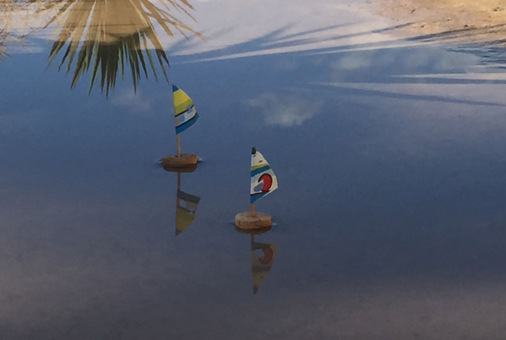
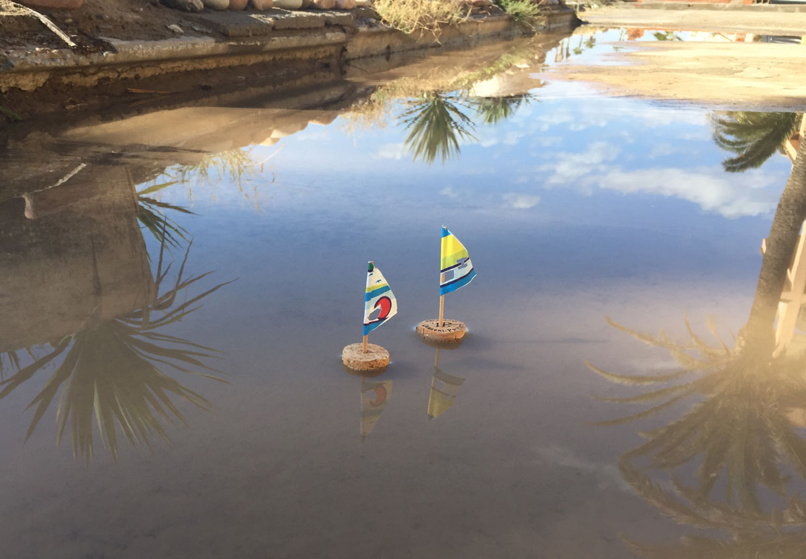

Jugando con agua
Lluvia con mini barcos. Corta una loncha de corcho y poner un palillo de dientes en el centro. Si tus velas son demasiado pesadas, el palillo de dientes debe ser más corto por lo que no se vuelca.


